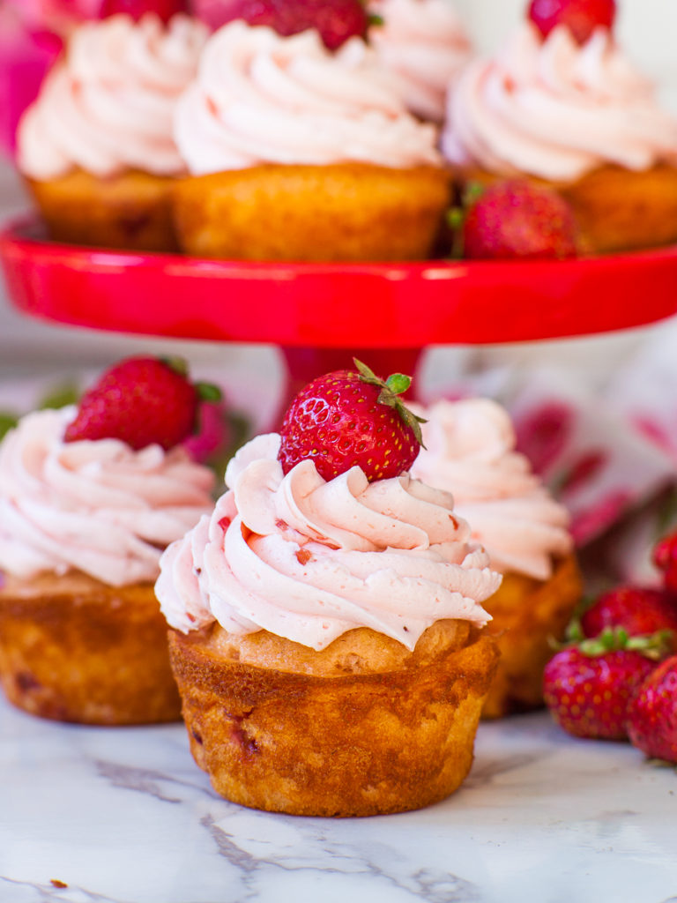

Strawberry Cupcakes
This recipe is for strawberry cupcakes! Very delicious, very yummy
Procedure
- Preheat the oven to 350F/177C. Line 18 cupcake tins with paper liners, or spray the insides with a baking spray.
- Into a large mixing bowl, add the wet ingredients plus the sugar: eggs, milk, oil, sugar, vanilla and strawberry extract. Using a mixer or a hand whisk, whisk on high speed for 2 to 3 minutes, until the mixture is smooth and the eggs are well beaten. In a separate bowl, combine the dry ingredients: flour, baking powder and salt. Sift the dry ingredients into the cake batter. Mix on medium speed for about 1 minute, just until the dry ingredients are incorporated. Watch my video recipe to see how it’s done.
- Next, gently fold in the diced strawberry. Using a measuring scoop, fill each cupcake tin about 1/2 to 3/4 of the way full. Bake in the preheated oven for 18 to 22 minutes, until the tops of the cupcakes are golden brown. Remove them from the oven and let the cupcakes cool completely on a wire rack.
Ingredients
- 3 large eggs
- 3/4 cup whole milk
- 1/2 cup cooking oil, canola, vegetable, avocado, olive
- 3/4 cup white granulated sugar
- 1 tsp vanilla extract
- 1 tsp strawberry extract or emulsion
- 1 1/2 cups all-purpose flour
- 3 tsp baking powder
- 1/4 tsp salt
- 1 cup diced strawberries